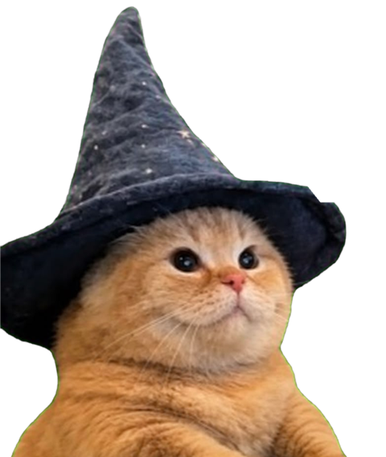
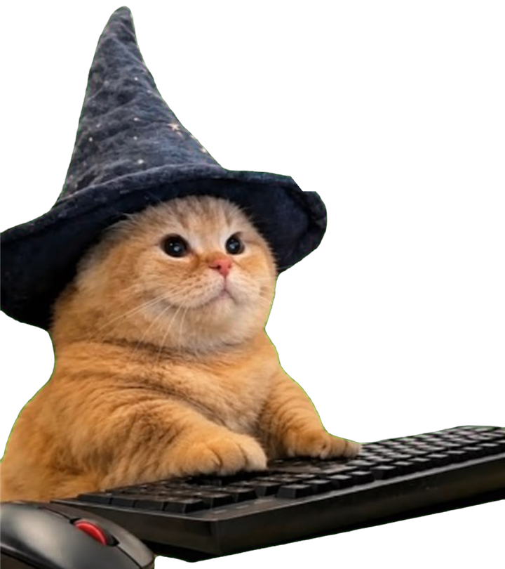

Bianca Rothschild
Tarot, astrologia e conselhos felinos para carreira, amor e destino. Sete vidas de experiência, um chapéu que já foi de uma bruxa de verdade e zero paciência para respostas vagas.

Bianca em todos os planos astrais
Gata de muitas faces (todas fofas). Ela posa para o retrato oficial, mas no dia a dia é vista assim:
O retrato oficial
Arcano 0: a única carta do baralho que olha de volta.
Na bola de cristal
Vê o seu futuro. E, às vezes, só o reflexo do próprio bigode.
Na lua crescente
Consultas noturnas sujeitas a soneca. Volta na Lua Cheia.
Contando estrelas
Já contou três. Depois dormiu. Recomeça amanhã.
Espiando a carta
Ela sempre vê a carta antes de você. Não adianta esconder.
A pata do destino
A carta escolhida é sempre a que ela empurra da mesa.

Ela está escrita nas estrelas. Literalmente.
Ligue os pontos e lá está ela: chapéu, bigodes e aquela pose de quem já sabe a resposta antes de você terminar a pergunta. Bianca diz que o céu inteiro foi desenhado para ela. Os astrônomos discordam. Os astrônomos não têm sete vidas.
Passe o mouse (ou toque) na constelação para ver quem está lá.
As sete vidas de Bianca
Toda vidente tem uma história. A da Bianca tem sete — e em todas ela caiu de pé.
Escolha sua carta — ou deixe a pata escolher
Tarô de Marselha e Rider-Waite, lidos com intuição, carinho e um leve desdém felino por perguntas do tipo “ele vai voltar?”. Toda leitura vem com resumo em PDF e pelo menos um pelo de brinde.
Os 7 mandamentos felinos da carreira
Bianca passou uma vida inteira deitada em teclados corporativos, ouvindo reuniões de feedback. Desse tempo, saíram as leis que guiam toda leitura de Carreira & Emprego:
Brinque com o destino
Quatro jeitos de consultar a Bianca agora mesmo, sem marcar horário. Ela só pede que você não faça a mesma pergunta 47 vezes. (Ela vai saber.)
Pense numa pergunta e escolha uma carta
A Bianca embaralhou. Duas cartas caíram da mesa, mas ela diz que foi “parte do ritual”.
Faça uma pergunta de sim ou não
O céu do dia em que você nasceu
Escolha seu signo e veja sua constelação ganhar forma, com o horóscopo felino da semana. Para algo mais profundo que uma soneca, há os mapas logo abaixo.
Tarot + Astrologia: sete vidas em uma sessão
O mapa mostra o terreno; as cartas mostram o momento. Juntos, saem mais baratos (Bianca é mística, mas sabe fazer conta).
Miados de satisfação
Humanos, gatos e até um cachorro. Bianca responde a todos — quando acorda.
Marque sua consulta
Monte seu pedido aqui e envie pelo Instagram. A Bianca responde entre uma soneca e outra — em geral em até 24 horas (ou 16 sonecas, o que vier primeiro).
@bianca.gatamistica · envie seu pedido por direct
Vídeo, áudio ou texto — para todo o Brasil (e qualquer telhado)
Pix ou cartão. Sachês são aceitos apenas como gorjeta.
Se a resposta demorar, ela está aqui. Não acorde.